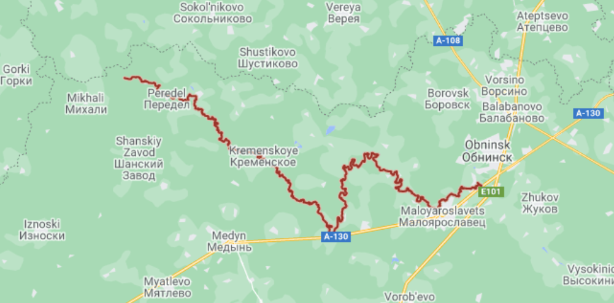
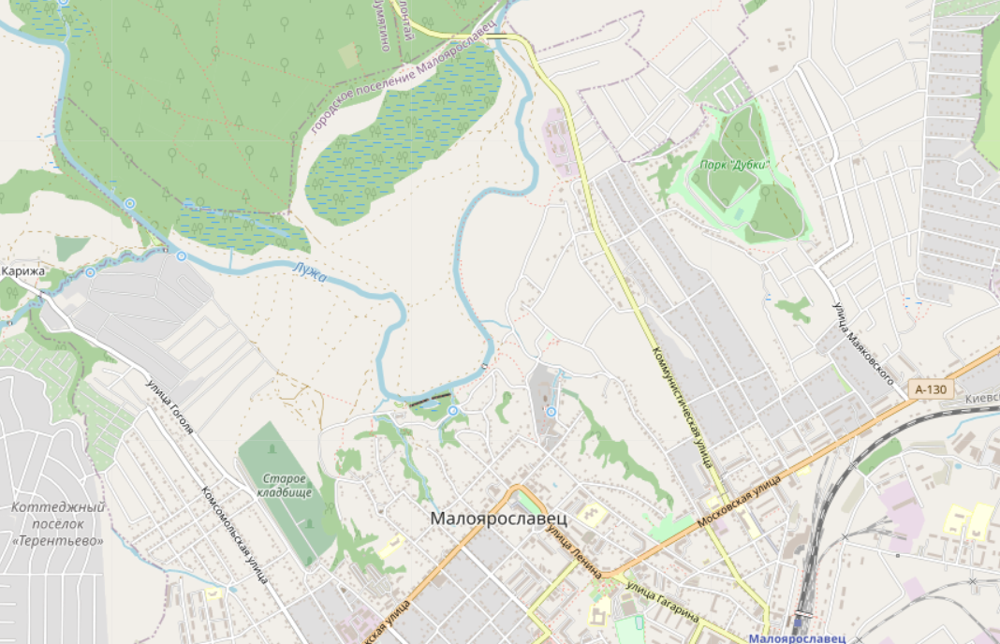
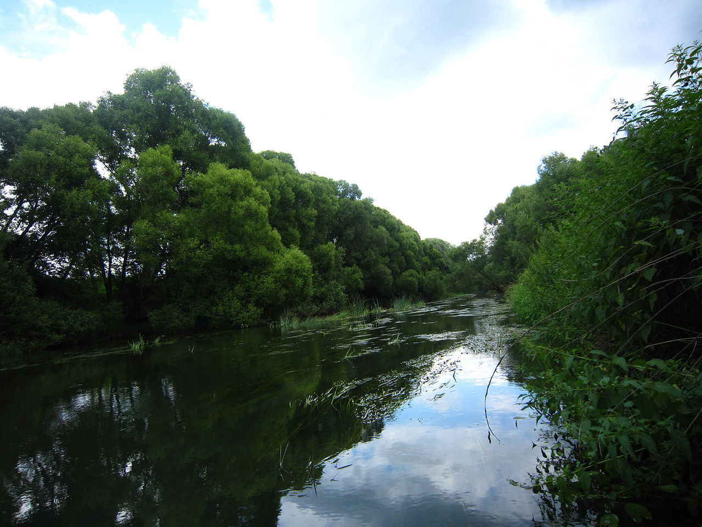
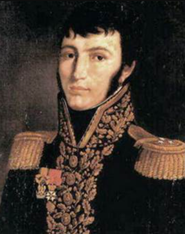
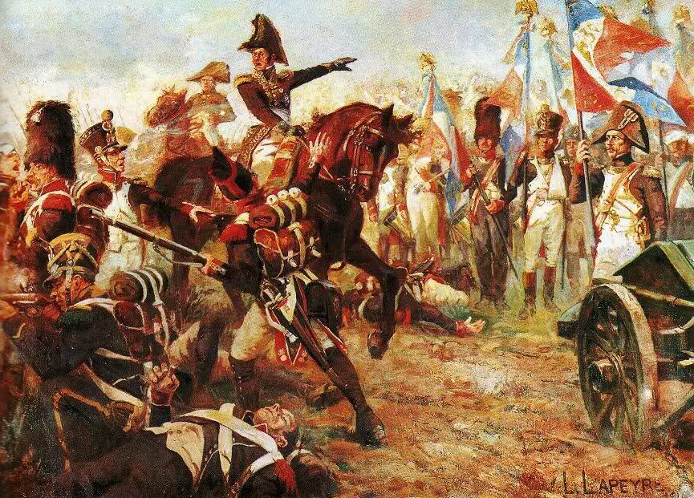
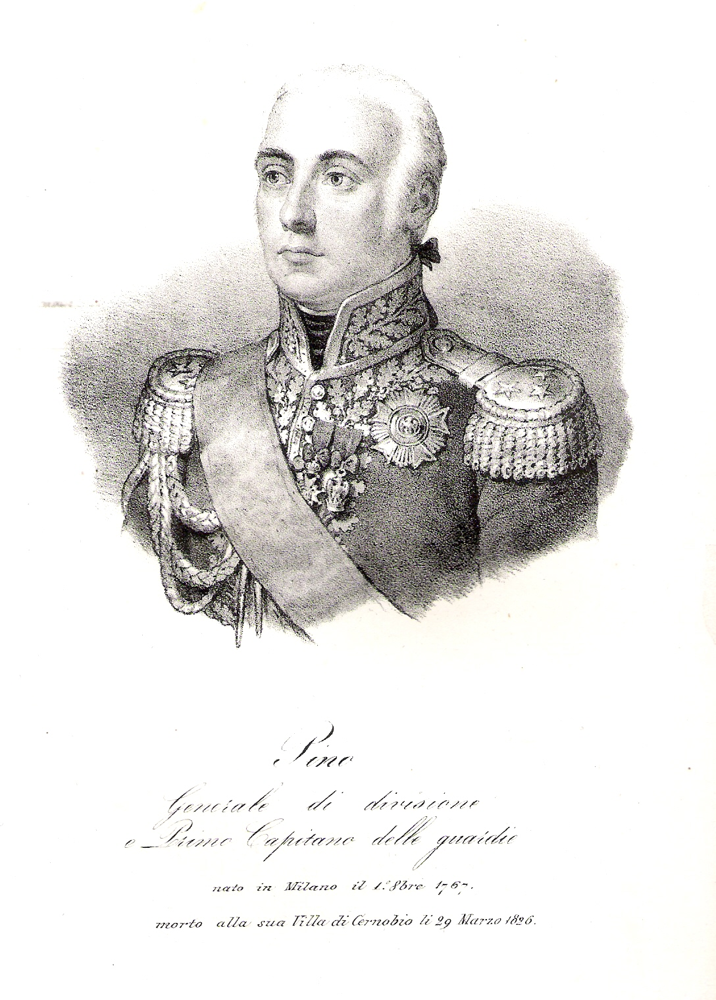
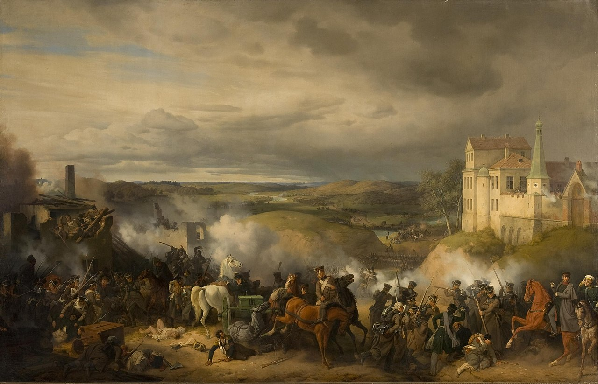
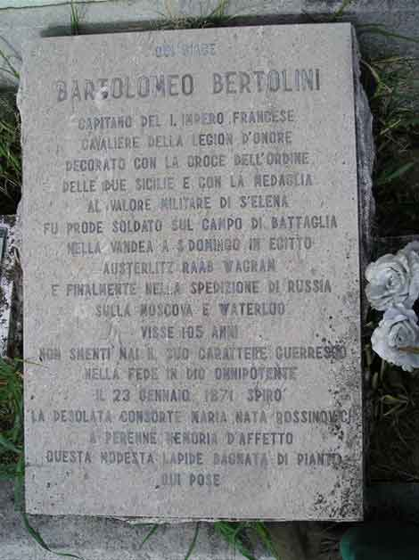
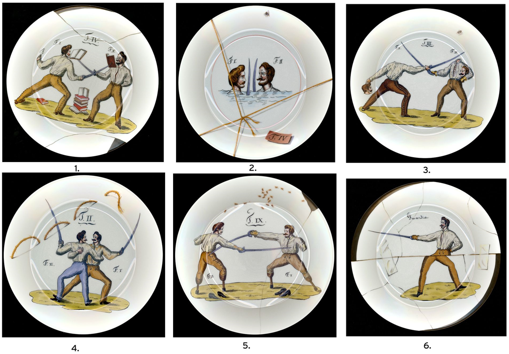

이탈리아 사내들의 열정 - 말로야로슬라베츠 전투
게시: 2021-05-24T06:30:33+09:00
말로야로슬라베츠를 선점당한 독투로프는 아차 싶었지만 자세히 보니 외젠의 이탈리아 군단 주력 부대는 아직 말로야로슬라베츠에 방어진지를 구축한 상황은 아니었습니다. 약 2개 대대 정도만이 마을을 점거하고 있었고, 나머지 대부분의 부대는 루즈하 강의 건너편인 북쪽 강변에 캠프를 치고 있었습니다. 루즈하 강은 말로야로슬라베츠에서 북쪽이 열린 반원형을 그리며 크게 휘어 북서쪽을 향해 흐르는 강이었습니다. 말로야로슬라베츠는 그 반원호의 정점에 위치한다고 볼 수 있는 마을이었는데, 나폴레옹이 메딘(Medyn)을 거쳐 서쪽 스몰렌스크로 가려면 루즈하 강을 건너야만 했고, 그러기에 가장 좋은 곳이 바로 여기 말로야로슬라베츠에 놓인 다리였습니다.

(루즈하 강의 대략적인 지도입니다. 우하단의 만곡부에 말로야로슬라베츠가 있습니다.)

(말로야로슬라베츠의 현재 지도입니다. 마을 북쪽에 실개천처럼 흐르는 루즈하 강이 보입니다.)

(루즈하 강의 사진입니다. 보시다시피 그렇게 큰 강은 아닙니다만, 꽤 깊고 물살이 강한 강입니다. 물론 이 정도 크기의 강이라면 다리가 없더라도 충분히 걸어서 건널 여율목을 여기저기서 찾을 수 있었을 것입니다.) 상황을 판단한 독투로프는 망설이지 않고 즉각 말로야로슬라베츠 탈환에 나섰습니다. 당시 말로야로슬라베츠 마을을 지키고 있던 것은 델존(Alexis Joseph Delzons) 사단 휘하의 2개 대대였는데, 이들은 갑자기 나타난 러시아군에 의해 밀려났습니다. 그러나 여전히 강가의 다리는 이탈리아군의 수중에 있었습니다. 기습을 당한 델존 사단은 당황하지 않고 곧장 반격에 나서 독투로프를 다시 밀어냈습니다. 항상 용감하게, 그리고 열심히 싸우지만 언제나 운이 없던 독투로프는 이렇게 다시 패전의 멍에를 뒤집어 쓸 팔자였습니다.

(델존(Alexis Joseph Delzons) 장군입니다. 그는 나폴레옹보다 6살 연하로서, 프랑스 남부 지방인 깡탈(Cantal) 지방에서 혁명 의용군이 구성될 때 10대의 나이로 장교로 선발되며 군 생활을 시작했습니다. 그는 처음에는 피레네 방면군에 속했다가 나중에 이탈리아 방면군으로 배속되면서 나폴레옹과 연을 맺었습니다. 그는 데고(Dego), 로디(Lodi), 리볼리(Rivoli) 전투 등에서 전공을 세우며 나폴레옹에게 눈도장을 찍었고 이집트 원정에도 따라갔으며, 돌아와서는 25세의 나이에 준장으로 승진했습니다. 그 이후에는 마르몽을 따라 달마시아(Dalmatia, 오늘날의 크로아티아) 방면에서 복무하며 중앙 무대에서 조금 멀어졌습니다. 델존은 이 전투에서도 선두 지휘를 하다 그만 전사하고 맙니다. 어떻게 그게 가능한지 이해는 잘 안가지만, 머리에만 2방의 머스켓 총탄을 맞고 즉사했습니다.) 그런데 난데없이 남쪽에서 러시아군 지원군이 우르르 쏟아져 나왔습니다. 이들은 사실은 독투로프보다 먼저 도착해서 미리 말로야로슬라베츠를 점령해야 했었던 쿠투조프의 선발대 라에프스키(Raevsky) 부대였습니다. 오전 10시가 넘어서야 나타난 라에프스키의 지원 부대 덕분에 독투로프는 다시 델존 사단을 밀어내고 말로야로슬라베츠를 점령할 수 있었습니다. 그러나 상황은 점점 뜨거워졌습니다. 강북안에 주둔하고 있던 외젠 군단 휘하 브루지에(Jean-Baptiste Broussier) 사단과 피노(Domenico Pino) 사단까지 우르르 다리를 넘어와 라에프스키와 독투로프를 몰아냈기 때문이었습니다.

(1809년 7월, 바그람 전투에서의 브루지에(Jean-Baptiste Broussier) 장군입니다. 나폴레옹보다 7살 연하였던 그는 성직자가 되기 위해 공부를 하라는 부모님의 간청을 뿌리치고 군에 자원 입대한 말썽쟁이 아들이었습니다. 프랑스 북동쪽인 므즈(Meuse) 지방 출신이었던 그는 처음에는 상브레-므즈(Sambre-et-Meuse) 방면군에서 복무하다가 1797년 이탈리아 방면군으로 전속된 이후, 거의 계속 이탈리아 지방에서 복무했습니다. 그는 1814년 고향땅인 므즈 지방을 방어하다 그만 뇌졸증으로 사망했습니다.)

(피노(Domenico Pino) 장군입니다. 나폴레옹보다 9살 연상이었던 그는 밀라노의 유복한 가문에 태어나 별 걱정없이 파르마 공국 기병대 대위로 복무하다가 나폴레옹의 전광석화와 같은 침공을 받고 어어 하는 사이에 나폴레옹이 현지 병력으로 편성한 롬바르디 군단의 일원이 되었습니다. 능력이 출중한 편이었던 그는 이후 계속 나폴레옹에게 충성하며 승승장구했는데, 1802년 나폴레옹이 치살피나 공화국을 이탈리아 왕국으로 재편하면서 국왕으로 셀프 즉위하자 그 초대 국방부 장관이 되기도 했습니다. 그는 러시아에서 살아남아 아름다운 이탈리아 땅을 밟은 1천여명의 럭키 이탈리아인들 중 하나였고, 러시아 작전 중에 외젠과 사이가 틀어지는 바람에 이후에는 중용되지 못했습니다. 그는 다시 북부 이탈리아의 주인이 된 오스트리아 합스부르크 왕정으로부터 북부 이탈리아군의 원수직을 제안 받았으나 거절하고 은퇴하여 아름다운 코모(Como) 호숫가 저택에서 조용하고 행복하게 살았습니다.) 이때부터 격렬한 난투극이 시작되었습니다. 곧 현장에 도착한 나폴레옹과 쿠투조프가 연달아 증원군을 투입하며 싸움에 기름을 끼얹었고, 말로야로슬라베츠는 최소 8번 주인이 바뀌면서 양군은 점심도 건너뛰고 격전을 계속했습니다. 새벽에 소규모로 시작된 전투가 양측 병력이 각각 2~3만씩 동원되는 큰 전투로 번지면서 밤늦게까지 이어진 것은 양측의 주력부대가 현장에 띄엄띄엄 도착했기 때문이었습니다. 게다가 나폴레옹 측은 좁은 말로야로슬라베츠의 다리를 건너야 전장에 투입될 수 있다는 약점까지 있었습니다. 한밤중이 되어서야 끝난 전투에서 최후의 승자는 결국 외젠의 이탈리아군이었습니다. 이들은 결국 말로야로슬라베츠에서 러시아군을 몰아냈고, 외젠은 나폴레옹으로부터 보기 드문 극찬을 받았습니다.

(말로야로슬라베츠 전투 광경입니다. 루즈하 강변이 보입니다.) 실제로 이 날 이탈리아군이 보여준 용맹은 대단하여 근위대의 베르테젠(Pierre Berthezène) 장군은 이 전투가 전체 러시아 원정 전투 중 최고의 전투였다고 평가했습니다. 또 러시아군 측에서 이 전투를 관측하던 영국군 장군 로버트 윌슨 경(Sir Robert Thomas Wilson)도 '이탈리아군은 이때 자신들이 유럽에서 가장 용감한 부대라는 것을 입증해보였다'라며 극찬했습니다. 이렇게 모든 사람들이 이탈리아군의 용맹을 극찬한 것에는 이유가 충분했습니다. 이 전투에 실제 투입된 러시아군이 훨씬 많았고 무엇보다 화력면에서 이탈리아군을 압도했습니다. 러시아군은 3만2천명의 병력에 354문의 대포를 투입한 것에 비해 그랑다르메가 투입한 병력은 2만7천에 대포는 고작 72문에 불과했는데도, 전투에서는 이탈리아군이 러시아군을 완전히 패퇴시켰던 것입니다. 다만 나중에 살아서 이탈리아 땅을 밟을 수 있었던 행운아 중 한명이었던 베르톨리니(Bartolomeo Bertolini) 대위는 회고록에서 '악의적이고 배은망덕한 프랑스 역사가놈들이 이탈리아군의 용맹함에 대해서는 역사서에서 언급을 하지 않는다'라며 불평을 했습니다.

(베르톨리니 대위는 나폴레옹보다 6살 어렸을 뿐인데도 1812년까지도 대위에 그칠 정도로 무명이었습니다. 그러나 그는 자원하여 나폴레옹의 전쟁에 뛰어든 이탈리아 열혈남아로서 이집트는 물론 카리브 해의 생도밍그 원정까지 따라갈 정도로 산전수전을 다 겪은 노병이었습니다. 나폴레옹 몰락 후에, 군에서 쫓겨나고 연금도 몰수되었으나 강호인답게 펜싱을 가르쳐서 생계를 유지하면서도 열혈남아 기질은 죽지 않아서 계속 이탈리아의 혁명 대의를 추구했으며, 결국 밀고되어 오스트리아 감옥에 수년간 갇히는 고난을 겪기도 했습니다. 그는 꽤 유명한 검술가로서 펜싱 교본을 남기기도 했고, 무려 95세까지 살아 나폴레옹 3세가 몰락하는 것까지 다 보고 이탈리아 북부 트리에스테에서 1871년에 사망했습니다. 사진은 트리에스테에 있는 그의 묘비입니다.)

(베르톨리니 대위가 쓴 펜싱 교본에 나오는 그림들을 접시에 옮긴 것이라고 하는데... 글쎄요? 5,6번은 몰라도 1~4번은 뭔가 장난을 치는 것 같습니다?? 과연 저 검법이 화산검법이나 독고구검보다 더 셀까요?) 아무튼 이제 말로야로슬라베츠는 나폴레옹 수중에 들어왔고, 나폴레옹은 '쿠투조프에게 한방 먹인 뒤 먹을 것이 남아있는 남쪽 도로를 따라 스몰렌스크로 철수한다'라는 계획을 실행에 옮길 수 있게 되었습니다. 그러나 마가 끼었다고 해야 하나, 여기서 나폴레옹은 매우 희한한 결정을 내려 부하들을 기쁘게 했고, 쿠투조프도 정말 어이없는 결정을 내려 부하들의 복장을 터뜨렸습니다. Source : 1812 Napoleon's Fatal March on Moscow by Adam Zamoyski
https://en.wikipedia.org/wiki/Battle_of_Maloyaroslavets
https://en.wikipedia.org/wiki/Luzha
https://en.wikipedia.org/wiki/Alexis_Joseph_Delzons
https://en.wikipedia.org/wiki/Jean-Baptiste_Broussier
https://commons.wikimedia.org/wiki/File:La_division_Broussier_%C3%A0_Wagram,_le_6_juillet_1809.jpg
{kind=link}
https://en.wikipedia.org/wiki/Domenico_Pino
http://www.warfare.it/documenti/bertolini.html